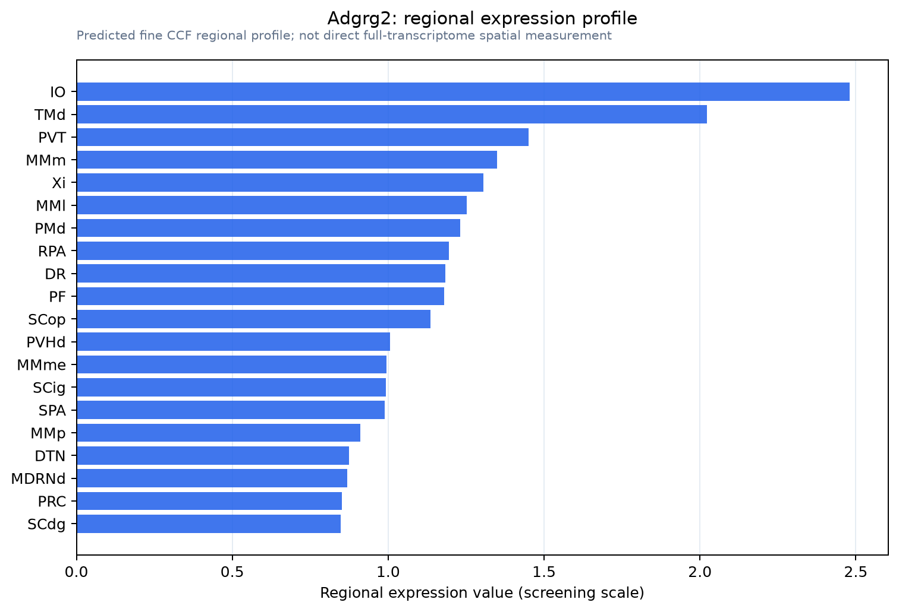

Adgrg2
Adhesion G protein-coupled receptor G2 (G protein-coupled receptor 64) (Mouse epididymis-specific protein 6) (Me6) [Cleaved into: Adhesion G protein-coupled receptor G2, N-terminal fragment (ADGRG2 N-
Spatial tier: RESTRICTED · Class: GPCR · Top region: IO (Inferior olivary complex) · Positive regions: 22/554
43.5Discovery Score
40.2Targetability Score
CEvidence grade C
What this means: Adgrg2: fine CCF profile is restricted toward IO (top regions: IO, TMd, PVT, MMm, Xi; 22 positive regions); direct spatial validation is still required.
Direct spatial evidence
MERFISH REGION LOCATOR

Regional expression figure

Predicted WMB × fine-CCF profile; not direct full-transcriptome spatial measurement.
Spatial profile
Evidence and specificity
- Evidence status
- PREDICTED_FINE
- Direct sources
- None; predicted localization only
- Exclusive threshold
- 12 positive regions out of 554
- Spatial specificity
- 0.305
- Top-region fraction
- 0.062
- Filter status
- PASS
Interpretation limits
- Cell-type-to-region projection is imputed expression, not direct spatial measurement.
- Adult reference atlases do not establish stability across age, sex, strain, state, or disease.
- Transcript abundance does not guarantee protein abundance or genetic-tool performance.